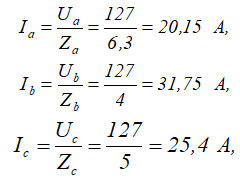

Бир хил частотали ва фазалар бўйича ўзаро 120 0 силжиган учта ЭЮК ли занжирдаги ток уч
фазали ток деб
аталади. Уч фазали ЭЮК уч фазали ўзгарувчан ток генераторидан олинади. Уч фазали ЭЮК системаси, уч
фазали истеъмолчи ва уларни бир–бирига боғловчи симлар уч фазали занжирни ташкил этади.
Уч фазали занжирда икки хил кучланиш ва ток мавжуд:
Фаза кучланиши – фазаларнинг боши ва охири орасидаги кучланишлар ёки линия симларининг ҳар бири
билан
нейтрал сим орасидаги кучланиш бўлиб U A, U B , ва U C лар билан ёки
умумий тарзда билан белгиланади;
Линия кучланиши – генератор чулғамларининг А билан В, В билан С ва С билан А орасидаги кучланишлар
ёки
линия симлари орасидаги кучланиш бўлиб U AB, U BC , ва U CA лар билан
ёки умумий тарзда UA билан белгиланади;
Фаза токи – генератор чулғамларнинг ёки истеъмолчиларнинг бош учидан охирги учига йўналган ток бўлиб
умумий тарзда билан белгиланади.
Линия токи – линия симларидан ўтаётган ток бўлиб умумий ҳолда билан белгиланади.
Уч фазали генераторларнинг чулғамлари, уч фазали генераторларнинг фазалари ўзаро юлдуз ва учбурчак
усулларда уланади.
Уч фазали токнинг қуввати
Симметрик уч фазали системада қувватлар қуйидагича аниқланади:
Уч фазали токнинг қувватини бир фазали ва уч фазали ваттметрлар ёрдамида ўлчаш мумкин.
Уч фазали симметрик истеъмолчиларни юлдуз схемасидан учбурчак схемасига ўтказиб уланса, линиядаги
ток
ҳамда истеъмолчининг қуввати 3 мартага кўпаяди /бу хусусиятдан амалда кенг ва самарадорли
фойдаланилади/.
Уч фазали занжирига оид масала.
Масала
Линия кучланиши 220 В бўлган тўрт симли уч фазали манбага фазаларнинг актив ва индуктив қаршиликлари
қуйидагича бўлган истеъмолчилар юлдуз усулда уланган (15– расм а). R a = 5 Ом, Ха
= 4 Ом, Rb = 4 Ом, RC =
3 Ом, ХС =4 Ом. Фаза ва нол симдаги токлар, бутун системанинг актив ва реактив қувватлари
аниқлансин,
ҳамда ток ва кучланишлар вектор диаграммаси қурилсин.
Масаланинг ечилиши.
1. Фаза кучланишини аниқлаймиз:
2. Ҳар бир фазанинг тўла қаршилигини аниқлаймиз:
3. Фаза токларини аниқлаймиз:

Истеъмолчилар юлдуз усулда уланганлиги туфайли линия токлари фаза токларига тенг, яъни:
4. Ҳар бир фазада қувват коэффициенти ҳамда ток ва кучланиш векторлари орасидаги силжиш бурчагини
топамиз:
5. Уч фазали занжир носимметрик бўлганлиги сабабли ҳар бир фазадаги актив ва реактив қувватлар
қуйидагича аниқланади:
Бутун занжирнинг актив ва реактив қувватлари эса,
6. Ток ва кучланишлар вектор диагаммасининг қуришни фаза кучланишлари векторларидан бошлаймиз (15–расм
б). Ҳар бир фазада ток актив – индуктив характерга эга бўлганлиги учун вектор диаграммада I a
ток вектори U a
дан f a=37 0 га, I b вектори U bдан f b=0
0га,I c ток векториU b дан f c=53 0 га орқада
қолади. Ноль симдаги ток I a,I b ва I c векторларни қўшиш
натижасида топилади, яъни: